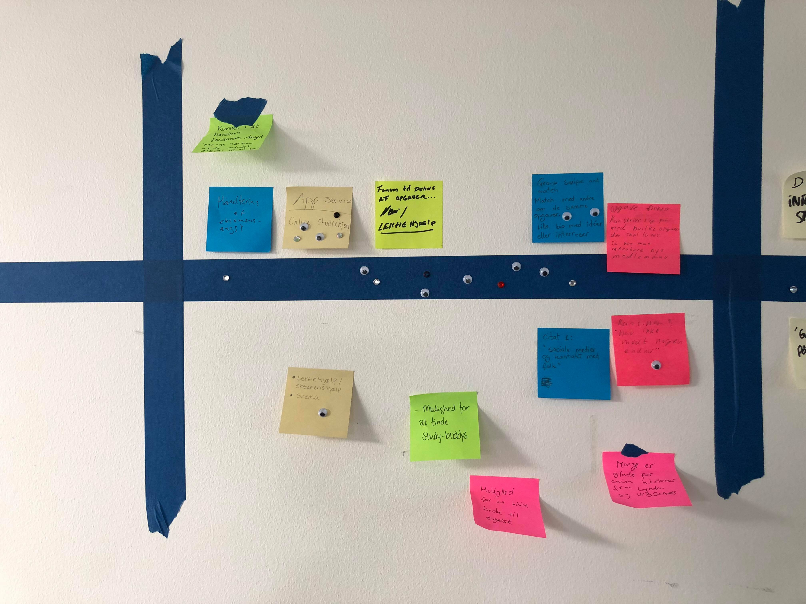

Experience map

Ideer jeg har til en KEA App:
Et chatforum/studieforum: hvor man kan stille spørgsmål til andre studerende. Kan enten være opgave/aflevering relateret, eller socialt relaveret.
Events: En app der har fokus på hvad der sker på skolen, forskellige events og studierelateret programmer.
Online lektiehjælp: Et slags forum, lige som ovenstående, så man kan høre andre medstuderende, om hjælp til opgaver og afleveringer.
Appen skal være tilgængelig for alle, så det skal være en dansk/engelsk app.
Skema: Der skal være et skema i appen, så man nemmere kan finde rundt i sit ugentligt skema.
Nyheder inden for branchen: Det kan både være nyheder inden for fx, studiejobs eller mulighed for at holde sig opdateret på forskellige fordrag.

Idéer efter pitch fra Per fra KEA bestyrrelse
Et chatforum/studieforum: hvor man kan stille spørgsmål til andre studerende på tværs af semester og hold. Kan enten være opgave/aflevering relateret, eller socialt relateret.
Online lektiehjælp: Et slags forum, lige som ovenstående, så man kan høre andre medstuderende, om hjælp til opgaver og afleveringer.
Personlig profil med profilbillede, semester og færdigheder beskrevet af brugeren selv og hvad man kan hjælpe andre med